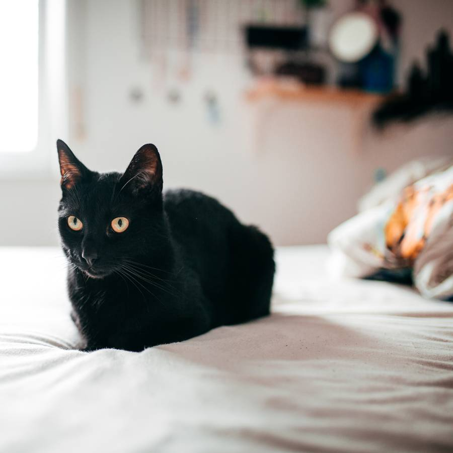
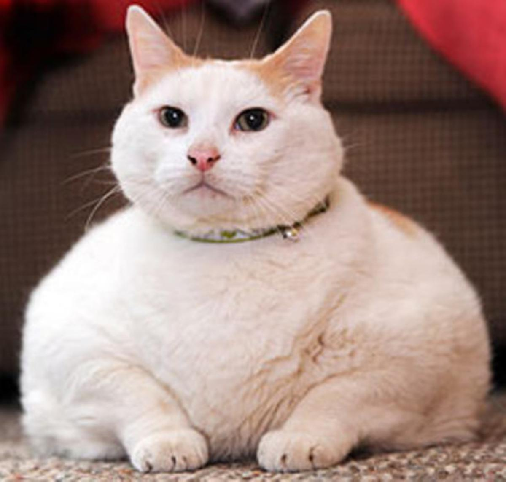

Historias
Historias contadas por karens y karens macho de todo el mundo.


Historias contadas por karens y karens macho de todo el mundo.
En el quinto piso de un edificio muy coqueto vivía una señora de casi 60 años. La mujer, que siempre estaba muy bien vestida, era la orgullosa propietaria de una gatita negra llamada Cindy.
Cierto día, la señora concurre a la clínica veterinaria muy preocupada por el sobrepeso y el nerviosismo de
su minina. Según ella, Cindy había ganado peso rápidamente y se mostraba más inquieta de lo habitual.
El veterinario realiza algunas preguntas para verificar los síntomas, pero no encuentra ningún indicio de
enfermedad. Entonces, pregunta a la señora si su minina estaba entera o había sido castrada. A eso la señora
le contesta que no le gustaba castrar a sus animales y que Cindy jamás se había operado.
El veterinario procede con un minucioso examen físico, en especial en el abdomen de la gatita. Tras palpar
su panza y detectar la presencia de fetos en pleno desarrollo, el médico mira a la mujer y le dice: “Pero
señora, ¿está su gata embarazada y usted no me ha dicho nada?”.
Mostrando cierto enfado frente a la pregunta del profesional, la señora contesta: “No, señor, eso es
imposible. Cindy jamás sale de mi apartamento”. Por supuesto, el veterinario pone una cara consternada y,
por algunos segundos, duda de su propio diagnóstico.
Cuando mi padre dejó de fumar, comenzó a subir de peso y varias veces al día se ponía de pie sobre la báscula. En tal tarea, se divertía también pesando a nuestro gordito gatito. Ahora, si sacas la báscula, nuestro gato va, como si fuera un condenado, a comprobar su peso.
Un joven soltero que vivía con su gato se percató que su factura del agua había aumentado bastante. Conforme
pasaba el tiempo, comenzó a sospechar que alguno de sus vecinos había aprovechado para conectarse a su toma
y perjudicarlo, por lo que llamó a un fontanero para revisar. Contrario a lo que esperaba, el profesional no
encontró nada extraño en su toma de agua.
Pasaba el tiempo y el joven aún se preguntaba qué podría ser lo que consumía tanta agua. Cansado de buscar
sin tener ninguna respuesta, llegó a la conclusión de que algún familiar o amigo era el que entraba a su
casa y gastaba agua sin su permiso. Por lo tanto, decidió colocar cámaras de video para atrapar al curioso
ladrón.
Cuando comprobó el video no pudo creer lo que estaba viendo. Resulta que su querido y afelpado gato había
aprendido a abrir la llave del grifo de la cocina. Y no solo eso, mientras no estaba su dueño, se subía
diario a la tarja para ver cómo caía el agua durante 6 horas al día. ¿Por qué no se dio cuenta el joven?
Fácil, la llave se cerraba sola después de un tiempo, así que era básicamente el crimen perfecto.